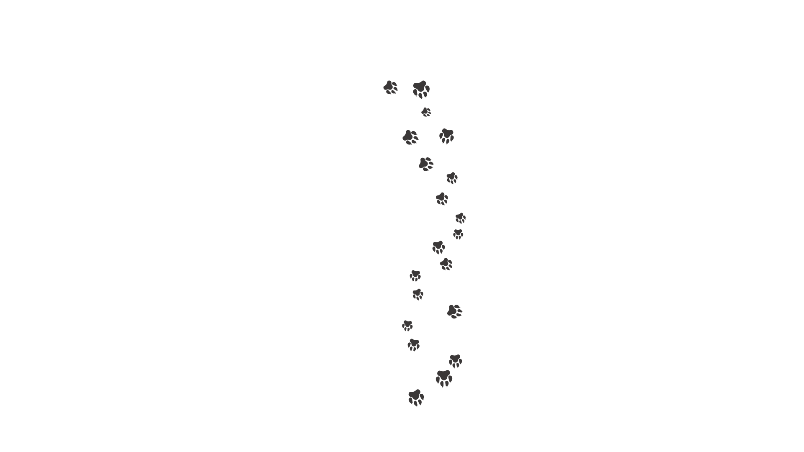

אז איך נצא לטיול רגוע בלי פציעות ועצבים?
מלאים כחולים ברגלים? לא פעם נפלתם כי הכלב שלכם משך אתכם ? כבר לא רוצים להוציא אותו לטיול?
אז בואו איתנו יחד עם הכלב שלכם לטיול ואולי נמצא פתרונות!:)
בשביל להצטיין בהליכה רגועה חשוב לחנך את הכלב ללכת לצידכם כשהרצועה רפויה. את זה אפשר להשיג באימונים יומיים במהלך הטיול שלכם - שמירה על רצועה קצרה תעזור לכם להרגיש יותר בשליטה ככל שהכלב קרוב יותר. חשוב לשמור על מרווח סביר ולא להדביק את הכלב לרגלכם, אלא לשמור על אורך רצועה מספק להליכה נוחה לשניכם. כשאתם שולטים באורך הרצועה חשוב לנסות לשמור עליה רפויה ככל הניתן כך שהמתח מידכם לא יאותת לכלב על סיטואציה מתוחה (כלב חדש, בן אדם זר, מקום חדש וכו׳).
עכשיו שהבעלים רגוע, הרצועה קצרה אך מנחמת (לא מתוחה מדי) אפשר להפגיש את הדוגי עם דוגיז אחרים או בני אדם, בהמשך ניתן לשלב את שניהם על מנת להעצים את המתח.
הדבר הראשון שנעשה הוא לתת לכלב מרווח מהאויב - אם הוא ריאקטיבי מאוד ממרחק של 5 מטרים למשל, נקח אותו 10 מטרים מהאויב כך שנקודת ההתחלה שלנו היא רוגע. כשהכלב רגוע נוכל להתחיל את ההליכה שלנו לכיוון המטרה, כל ריאקטיביות מצד הכלב (נביחה, קפיצה לכיוון, אי שקט, נהימה וכו׳) תגרום לכך שנפסיק לצעוד לכיוון המטרה ונצעד חזרה לנקודת ההתחלה. נלך מספר מטרים חזרה ונמתין עד שהכלב נרגע. זה גורם לו להבין שהוא לא חייב לפגוש כל אדם וכלב שנקלע לדרכו, מורידים את הסטרס. אנחנו חוזרים על הפעולה כמו מעין זיג-זג = הולכים לכיוון המטרה, רואים תגובה שלילית מצד הכלב וחוזרים מספר מטרים לאחור כך חוזר חלילה עד שאנחנו מצליחים לצמצם את הפער בינינו למטרה.
חשוב לזכור להרפות את הידיים- להחזיק את הרצועה כמובן אבל לא לתפוס בה כמו טרף מהג׳ונגל. באופן אינסטינקטיבי הידיים שלנו נלחצות ומותחות את הרצועה יותר קרוב, גופנו מקשיח, נשימותינו יותר מהירות ותוך שניות אנחנו מפחדים בדיוק כמו הכלב שלנו. הגישה היא פשוטה יחסית - קחו נשימות עמוקות, תרגיעו את עצמכם, תורידו את הידיים שלכם לקו המותן וישרו את גבכם. הפגינו בטחון דרך גופכם. כשהכלב מגיב בשליליות כלפי המטרה תגידו לו בקול רגוע אך רם מספיק ״בוא נלך״ ופנו לכיוון הנגדי.
תשכחו מכל אביזרי האופנה השונים והמוזרים כמו קולר קוצים, קולרים חשמליים עם שוקר, כל אותם פיצ׳פקס שאמורים ״לשמור על כלבכם תחת שליטה״ לכאורה. כל אלה יכולים לגרום לכלב להרגיש יותר מפוחד. הם יוצרים תגובה שלילית מצד הכלב כלפי הגירוי. דמיינו שוב את הילד שלכם שמפחד מעכבישים, זה נשמע אכזרי מאוד לשים עליהם כלי שליטה שכזה בתקווה שהוא יעזור להם להתמודד עם הפחד שלהם מעכבישים. עכשיו דמיינו את הכלב שלכם. תגמלו את כלבכם עם חטיף טעים כשהוא מצליח במשימה- הלכתם מספר מטרים יותר מקודם עד שהכלב הגיב? מעולה! חוזרים מספר מטרים לאחור ומתגמלים את הכלב עם צ׳ופר טעים. באופן כזה אנחנו יוצרים תגובה חיובית לגירוי, תגמול על שליטה עצמית אותה אנחנו רוצים להעצים אצל הכלב. תגמול שכזה יגרום לכלב שלכם להרגיש הרבה יותר רגוע וגם יתן לכם תחושת סיפוק כשתצליחו לעבור את המטרה ללא בעיה.
אל תשכחו שעל כל כמה מטרים שאתם מתקדמים קדימה תלכו גם כמה אחורה. חשוב להתמיד ולהבין כי מדובר בתהליך למידה, אורכו כתלות בכלב, יכולותיו ואופן ההתמדה שלכם. פחד הוא רגש מאוד חזק ולכן הוא לא יכול להיעלם בן לילה. ברגע בו אתם מפסיקים לחשוש מהתגובות של אנשים סביבכם ותתחילו להתפקס על הצרכים של כלבכם, אתם תבינו שאתם מתחילים לבחור את ההחלטות הנכונות עבור הדוגי שלכם. אתם כבר עושים את זה למשפחתכם והאהובים עליכם, תעשו את אותו הדבר עם הכלב שעכשיו בן משפחתכם לכל דבר.